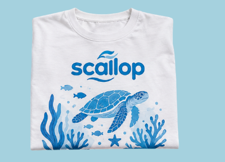
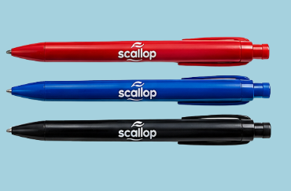
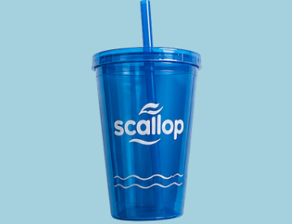
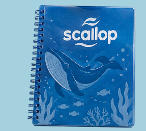
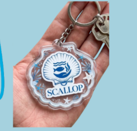
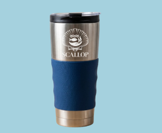
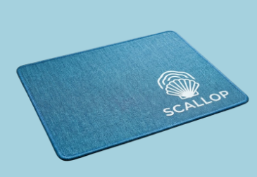
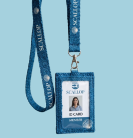
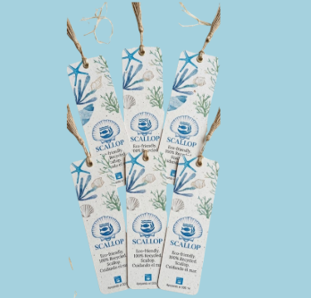
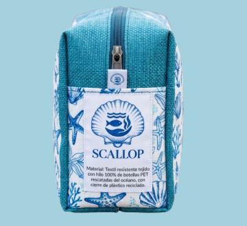

Nuestra Línea de Productos Ecológicos
En Scallop nos dedicamos a combatir la contaminación marina transformando la basura en productos útiles.

Playera Scallop
Material: algodón reciclado o una mezcla de algodón y poliéster reciclado. Si debe ser principalmente de plástico reciclado, puede usarse poliéster reciclado de botellas PET. Precio de venta: $250 MXN. Para campañas: $125 MXN por playera. Para costos y operación: $125 MXN.

Set de plumas Scallop
Material: cuerpos de plástico reciclado, con tinta y mecanismos internos convencionales. Precio de venta: $60 MXN por set de tres. Para campañas: $30 MXN por set. Para costos y operación: $30 MXN.

Vaso Scallop
Material: plástico reciclado, preferentemente PP (polipropileno) apto para contacto con bebidas. Precio de venta: $120 MXN. Para campañas: $60 MXN por vaso. Para costos y operación: $60 MXN.

Cuaderno Scallop
Material: cubierta de plástico reciclado, como PET, y hojas de papel reciclado. Precio de venta: $100 MXN. Para campañas: $50 MXN por cuaderno. Para costos y operación: $50 MXN.

Llavero de Plástico
Material: Plástico rígido (PP/PET) recuperado de redes de pesca y botellas marinas, inyectado en molde con forma de concha/logo Scallop. Precio de venta: $45 MXN. Para campañas: $25 MXN por pieza. Para costos y operación: $10 MXN.

Termo Metálico con Sleeve de Goma Marina
Material: Cuerpo de acero inoxidable con funda/sleeve protectora hecha de goma y plásticos flexibles marinos reciclados. Precio de venta: $280 MXN. Para campañas: $190 MXN por pieza. Para costos y operación: $110 MXN.

Mousepad
Material: Base de caucho sintético reciclado con superficie de tela suave de hilo PET ecológico. Precio de venta: $120 MXN. Para campañas: $75 MXN por pieza. Para costos y operación: $35 MXN.

Lanyard y Porta-Gafete Marino
Material: Cinta tejida de fibra PET marina reciclada con mosquetón de plástico rígido rescatado. Precio de venta: $50 MXN. Para campañas: $28 MXN por pieza. Para costos y operación: $12 MXN.

Kit de Marcapáginas / Separadores "Estrella de Mar"
Material: Elaborados con cartón prensado y papel 100% reciclado a partir de algas/residuos marinos, con cordones hechos de trozos de redes de pesca recuperadas. Precio de venta: $35 MXN (set de 5 piezas). Para campañas: $18 MXN por set. Para costos y operación: $8 MXN.

Cosmetiquera
Material: Textil resistente tejido con hilo 100% de botellas PET rescatadas del océano, con cierre de plástico reciclado. Precio de venta: $130 MXN. Para campañas (mayoreo): $80 MXN por pieza. Para costos y operación: $40 MXN.